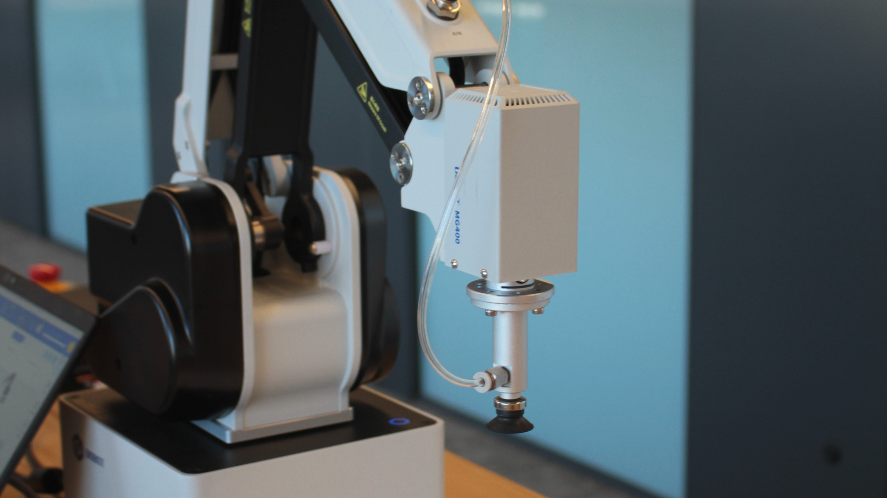
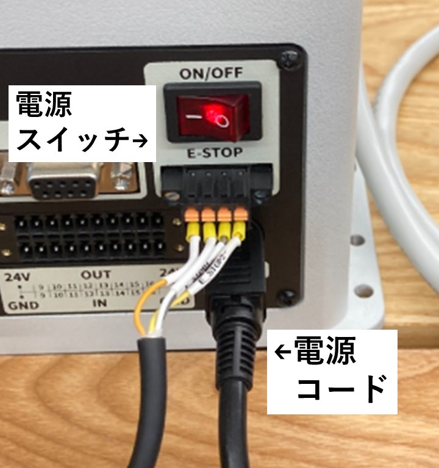
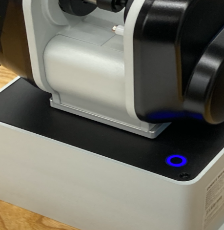
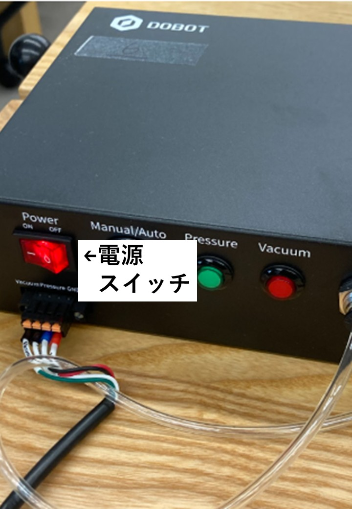
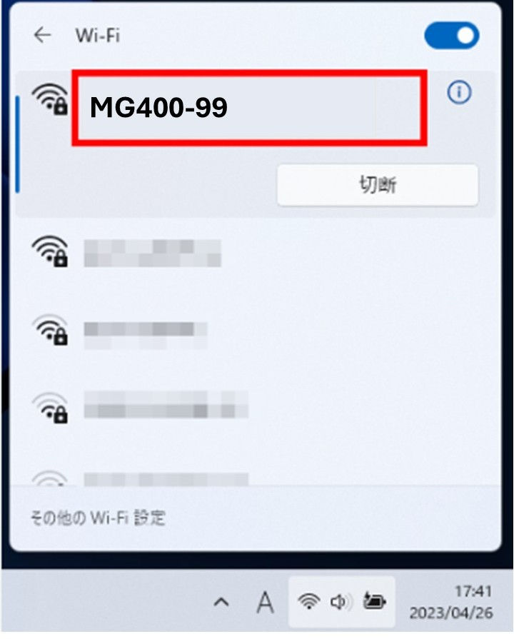

MG400 ロボットマニュアル
このマニュアルは、MG400ロボットの使用方法と安全ガイドラインを説明します。
1. 安全上の注意
ロボットを操作する際は、以下の安全ガイドラインを守ってください。
- ロボットの動作範囲内に、人や支障物が入らないようにしてください。
- 電源を切る際は、必ず指定された手順に従ってください。
- 緊急停止ボタンの位置を事前に確認してください。
2-1. アームのセットアップ手順
以下の手順に従って、ロボットをセットアップしてください。
- ロボットを安定した平面に設置します。
-
コンセントに刺した電源ケーブルをアーム本体に接続し、電源スイッチをONにします。
（MG400のランプが、青色に変わったら起動完了）
 
-
吸盤用のコンプレッサーの電源もONにします。

2-2. PCセットアップ手順
以下の手順に従って、PCをセットアップしてください。
-
事前に以下のボタンから、MG400を制御するソフトをダウンロードしてください。
DobotStudioをダウンロードする -
Windowsの右下にあるWifiマークを選択し、アームに貼ってある機体番号と同じ番号のWifiに接続します。
パスコードはこちら
1234567890DobotStudioを起動し、MG400を接続します。 - ここまでで接続できない場合は、ヘルプを参照してください。
3. DobotStudioの操作方法
DobotStudioはMG400を操作・プログラムするソフトです！
- イネーブルスイッチで固定を解除しましょう。
- コントロールから試しに、ロボットを手動で動かしてみましょう。
- I/Oを押して、DO-01をオンオフしてみよう。（吸盤の吸い込み）
- I/Oを押して、DO-02をオンオフしてみよう。（吸盤の吸い出し）
4. 使用を終了するとき
以下の手順に従って、ロボットをシャットダウンしてください。
- コントロールからロボットを手動で動かして、アームを調整しましょう
- イネーブルスイッチで固定かけましょう。
- 最後に、MG400との接続を切断し、MG400本体の電源を切る
5.ヘルプ
ロボットが動かない！接続できないときの対処法
- コントロールからロボットを手動で動かして、アームを調整しましょう
- イネーブルスイッチで固定かけましょう。
- 最後に、MG400との接続を切断し、MG400本体の電源を切る